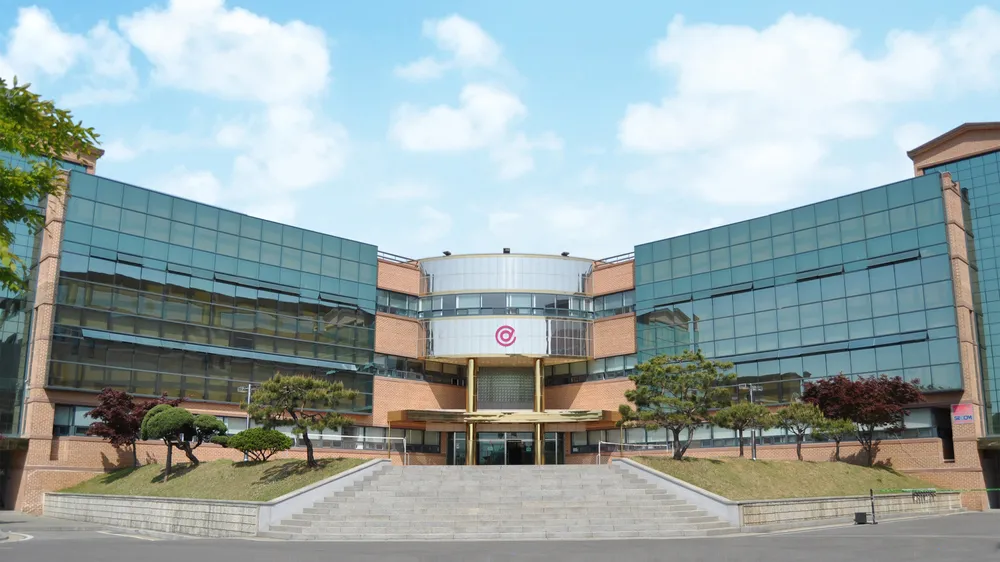

School Life
함께 시작하는 학교생활
입학식, 개학식, 학교 행사 등 다양한 경험을 통해 학교 공동체의 분위기를 느낄 수 있습니다.
Digital Media High School
한국디지털미디어고등학교는 비즈니스, 콘텐츠, 웹 개발, 정보보안을 중심으로 학생들이 직접 기획하고 제작하며 성장하는 IT 특성화 고등학교입니다.

About 디미고
입학식, 개학식, 학교 행사 등 다양한 경험을 통해 학교 공동체의 분위기를 느낄 수 있습니다.

전공 프로젝트와 학교 활동을 통해 학생들은 자신의 진로를 구체화하고 실력을 쌓아갑니다.

학교 행사와 공동체 활동을 통해 학생들은 전공 실력뿐 아니라 협력과 책임감도 함께 배웁니다.
Departments
디지털 비즈니스 기획, 데이터 분석, 온라인 서비스 운영을 배우며 기술과 경영을 연결하는 창의적인 인재를 키우는 학과입니다.
영상, 디자인, 촬영, 편집, 사용자 경험을 바탕으로 메시지를 전달하는 디지털 콘텐츠 제작 역량을 키우는 학과입니다.
HTML, CSS, JavaScript부터 서버와 데이터베이스 기초까지 배우며 실제로 작동하는 웹 서비스와 프로그램을 제작하는 학과입니다.
네트워크, 시스템, 보안 원리를 익히고 해킹 공격을 분석·방어하며 안전한 디지털 환경을 만드는 보안 인재를 기르는 학과입니다.
Career Results
수도권 대학 진학률
서울 및 수도권 대학 진학 비율전공 학과
e-비즈니스 · 디지털콘텐츠 · 웹프로그래밍 · 해킹방어Clubs
Daily Schedule
| 시간표 | 일과 |
|---|---|
| 06:30 ~ 07:20 | 아침 기상, 인원점검 |
| 07:30 ~ 08:10 | 아침 식사 |
| 08:10 ~ 08:40 | 1, 2학년 아침 프로그램 베네듀, 영어듣기, 독서 등 |
| 08:40 ~ 08:50 | 주번 활동 |
| 08:50 ~ 09:00 | 담임 조회 |
| 09:00 ~ 12:50 | 오전 수업 1~4교시 |
| 12:50 ~ 13:50 | 점심 식사 |
| 13:50 ~ 16:40 | 오후 수업 5~7교시 |
| 16:40 ~ 16:55 | 청소 시간 |
| 16:55 ~ 17:00 | 담임 종례 |
| 17:10 ~ 18:35 | 방과후 수업 1, 2 |
| 18:35 ~ 19:50 | 저녁 식사 |
| 19:50 ~ 21:10 | 야간 자율학습 1타임 |
| 21:10 ~ 21:30 | 휴식 시간 |
| 21:30 ~ 22:50 | 야간 자율학습 2타임 |
| 23:00 ~ | 생활관 이동 |
| 24:00 ~ | 취침 심야자습 희망자는 01:00까지 |
Admission Guide
학과별 교육과정, 학교생활, 입학 전형은 매년 바뀔 수 있으므로 최종 정보는 반드시 학교 공식 홈페이지와 모집요강을 확인해야 합니다.
공식 홈페이지 확인하기